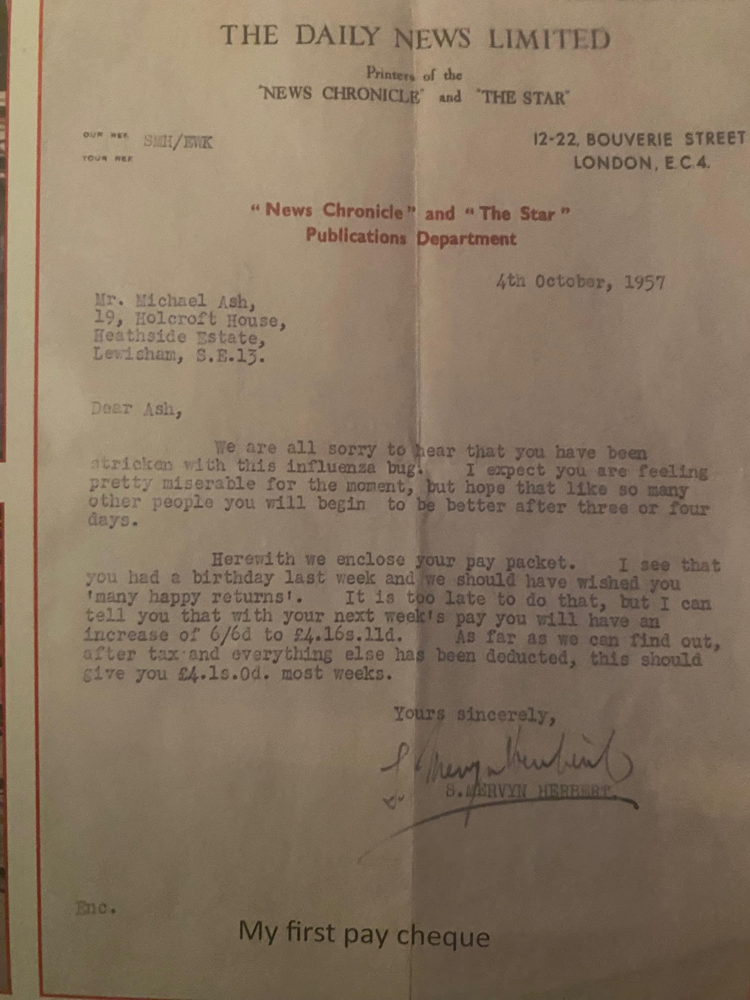
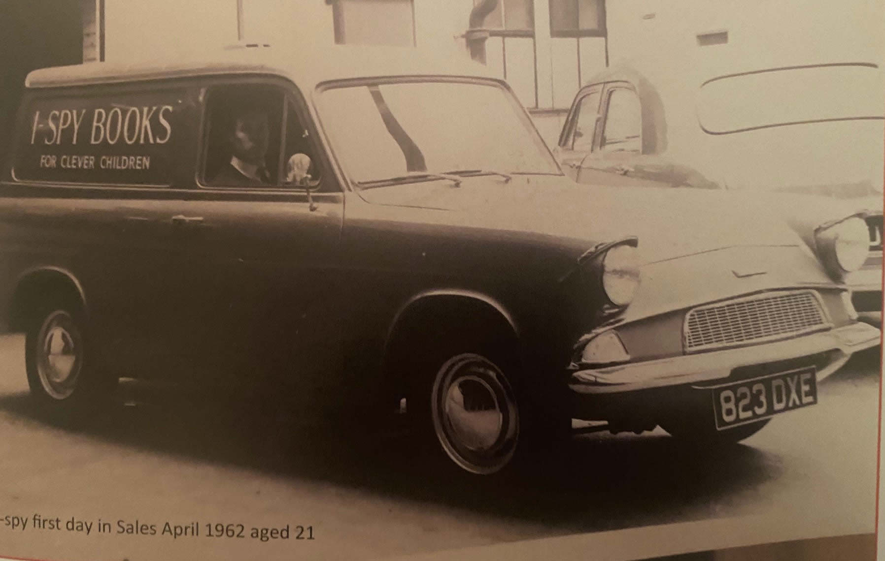

The Heritage of Fleet Street Vol. IV No.9 -Michael Ash -
Office Boy, News Chronicle© Michael Ash. 2024
|
|
I responded to an advertisement in The Star newspaper, a sister paper to The News Chronicle and was interviewed at the papers offices in Bouverie Street for the position of messenger boy. Shortly afterwards I received a job offer to start on 5th April 1956 aged 15 at the princely sum of £3:2:0 per week. On the day in question I did as my mum advised ,and dressed in a suit and tie whereas ,other boys present were in jeans and tee shirts. I truly believe this is why I was sent to the publishing office instead of the messenger boy pool. Mr Sam Mervyn- Herbert was the boss of the company 's publishing including I-Spy books a hugely popular series of children's books that sold in their millions at 6d, 1/- and 2/6d but huge income was from Michelin Maps and Guides of which we had world wide sales rights excluding France.  |
After six months
the post room boy was off to do his National Service and I applied for his
Job and started in October and that necessitated joining as a junior the
mighty NUPBPW ( National Union of Printing Bookbinding and Paper Workers)with
a weekly subscription of 2/6d. I ran the post room very enthusiastically
enjoying my job and working many hours of overtime. In those days you were
a junior until you were 21 so when Cadbury's the owners closed the paper
on 17th October I was still a junior
unately the publishing company was kept and named The Dickens Press after Charles Dickens who was the first editor of The Daily News later to become The News Chronicle. The Dickens Press relocated to Upper Thames Street in 1961 next door to The Mermaid Theatre backing on to The River Thames. Later that year I reached my majority (21) and when in conversation with Mr Herbert he asked me what department I would like to work in and suggested I should sell our books. Until then and still settling into our new location we had relied on sending out order forms. He said he liked the idea and would think about it, Soon it had been decided that they would buy a small van fill it with I Spy Books and set me free selling to newsagents in London. It proved over very successful and within 2 years I was now driving a nice estate car and taking orders for all of our range of titles at which point more sales people were taken on. I became the senior sales person when a sales director was appointed and flourished in this position until 1969 when I left to take up the position for a small children's publisher and after 2 years left to start my own business Grange Books Ltd.  |